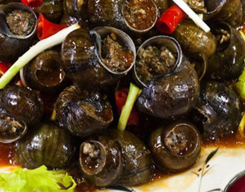
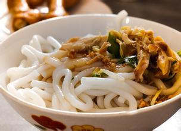
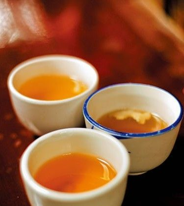

大理洱海特产螺蛳，白族喜食螺蛳，吃法有多种多样，其中腌螺蛳就是一种独特的吃法。腌螺蛳的食法是：取鲜活螺蛳，去壳，洗净后，用沸水浸泡片刻，捞出滤水冷却后，拌以酸辣调料后即可食用。此时的脆螺蛳有酸、辣、香等味，别具风味，是一道白族喜欢吃的凉菜。

凉鸡米线，大理古城小吃中的当家花旦。你若来到大理，轻嗅过上关花，吹过了下关风，观过苍山雪，也赏过了洱海月，却没有品上一次凉鸡米线，那么，你的游趣可是要大打折扣。凉米线用煮熟的鸡肉丝“罩帽”，外加核桃酱和小粉做成的卤汁，或者配上辣椒汁、姜醋汁、蒜末，再加上少许芝麻和花生末，极爽口。

三道茶，白族接待来客的最高礼仪。分为苦茶、甜茶、回味茶。苦茶多为烤制，因味苦而得名；甜茶因茶中加入核桃片和红糖而茶味带甜；第三道加入蜂蜜、花椒、乳扇等，喝起来有种说不出的回味,故称回味茶。